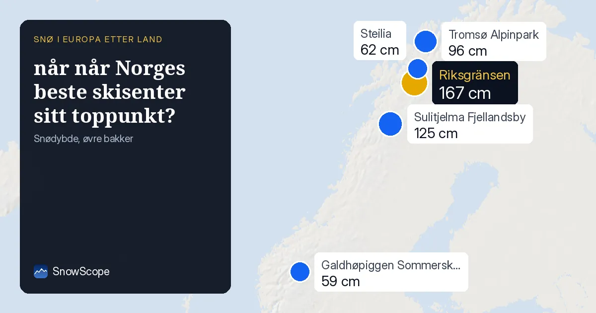
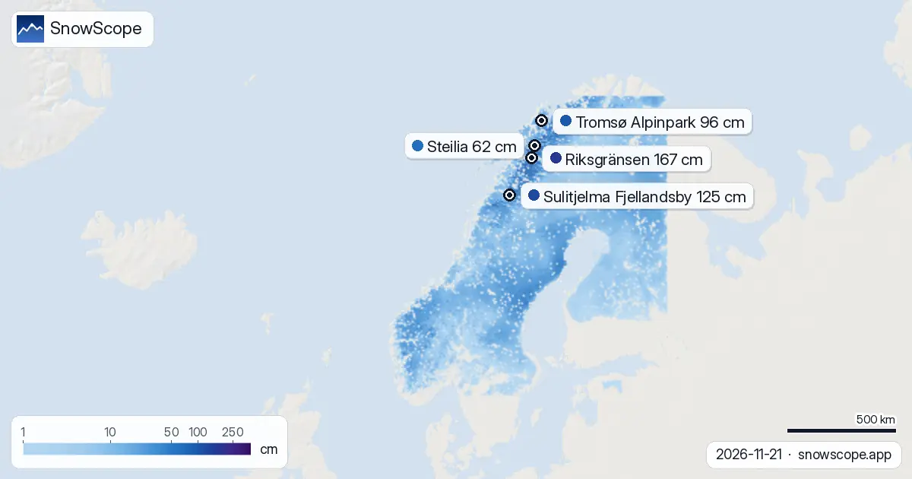

Riksgränsen 167 cm: når når Norges beste skisenter sitt toppunkt?
Når er det best å skiste på Riksgränsen? Skisteder har 167 cm i dag, men sent mars og midten av april er normalt når snødybden topper seg i Norges fjerneste nord. Modellen vår tyder på at betydelig nysnø kommer de neste to ukene.
Se snøprognosen for Riksgränsen direkte i SnowScope-appenSnødybde, puddervarsler og 3D-kartet, gratis.
Riksgränsen i dag versus sesongtoppen
Riksgränsen har 167 cm på 900 m høyde, noe som tilsvarer 94 prosent av dybden som er typisk for sent november. Skisteder ligger 105 cm høyere enn for sju dager siden—en solid økning. Men snødybden her når ikke sitt toppunkt før uke 15 og 16, som faller sent mars og midten av april. Det betyr at snølageret lagret over skisteder vil vokse i flere måneder ettersom fjellnederbør akkumuleres gjennom vinteren.
For å forstå når Riksgränsen er på sitt beste, tenk på snøpakken som vannlagring. Tidlig sesongs snø på lav høyde smelter lettere; snø som faller fra desember og utover holder seg lengre. Uke 15 bringer typisk 97 cm på dette stedet—sesongens høydepunkt. Så dagens 167 cm er en sterk start, men det er tidlig på vinteren.
| Resort | Today | Normal for the date | Share of normal |
|---|---|---|---|
| Riksgränsen | 58 cm | 62 cm | 94 % |
| Sulitjelma Fjellandsby | 48 cm | 54 cm | 89 % |
| Tromsø Alpinpark | 23 cm | 38 cm | 61 % |
| Steilia | 33 cm | 60 cm | 55 % |
| Galdhøpiggen Sommerskisenter | 30 cm | 86 cm | 35 % |

Norges snø sammenlignet med normalt nå
Over hele landet dekker snø 260 290 km2—omkring 92 prosent av det modellerte området. Det er en 5 prosents økning fra sju dager siden. De nordlige skisteder holder mest pålitelig snø: Riksgränsen leder med 167 cm, mens Sulitjelma Fjellandsby ligger på 125 cm. Tromsø Alpinpark, på lavere høyde, har 96 cm men har økt med 13 cm i løpet av de siste tre dagene. Steilia og Galdhøpiggen Sommerskisenter bygger fortsatt opp snøpakken på 67 cm og 59 cm henholdsvis, noe som er godt under gjennomsnittet for sent november.
Bare 149 av Norges 155 skisteder har målbar snø i dag. Bare bakke på de laveste skisteder gjenspeiler sesongen: snø vil komme og gå på lav høyde inntil stabil vinterdekke ankommer.

Hvor er snøen dypest nå?
Snødybde øker med høyde. Under 500 m er gjennomsnittet bare 9 cm og dekke er 86 prosent. Ved 500 til 1 000 m stiger gjennomsnittsdybden til 19 cm med 98 prosent dekke. Over 1 000 m er snø pålitelig: ved 1 500 til 2 000 m er gjennomsnittet 30 cm med fullstendig dekke, og over 2 000 m når det 40 cm. Dette mønsteret forteller en vannhistorie: det høyeste landet tar opp mest nedbør og mister minst for smelting. Trollheimen og Jotunheimen har vært de snørikeste områdene i løpet av de siste 72 timene, og samlet 36 cm og 27 cm henholdsvis. Disse fjellene holder sesongens vannreserve.
Snødybde øker med høyde. Under 500 m er gjennomsnittet bare 9 cm og dekke er 86 prosent. Ved 500 til 1 000 m stiger gjennomsnittsdybden til 19 cm med 98 prosent dekke. Over 1 000 m er snø pålitelig: ved 1 500 til 2 000 m er gjennomsnittet 30 cm med fullstendig dekke, og over 2 000 m når det 40 cm. Dette mønsteret forteller en vannhistorie: det høyeste landet tar opp mest nedbør og mister minst for smelting. Trollheimen og Jotunheimen har vært de snørikeste områdene i løpet av de siste 72 timene, og samlet 36 cm og 27 cm henholdsvis. Disse fjellene holder sesongens vannreserve.
Hva kommer neste: de neste to ukene
De neste tre dagene bringer opptil 15 cm over Norge. Etter det utvides prognosene: syv-dagers utsikten foreslår opptil 26 cm er mulig. Modellen fremhever 28. november som den snørikeste enkeltstående dagen på kort sikt, med et gjennomsnitt på 11 cm forventet. Innen tidlig desember (8. til 14. desember) skifter forholdene: den andre uken i denne perioden kunne se så mye som 38 cm akkumulert. Dette er når vinterpakken virkelig låser seg inn.
Riksgränsen kan forvente 5 cm de neste tre dagene og ytterligere 11 cm innen sent november. Disse gevinstene vil presse snøpakken dypere, og flytte skisteder nærmere forhold som støtter skiing gjennom hele sesongen.
Trenden: en våt uke fulgt av vekst
For seks dager siden hadde Riksgränsen 173 cm og landets snødekke var 246 310 km2. I løpet av den siste uken kom snø og gikk—toppfallet var 55 cm over et bredt område på 16. november. I går havde landet vokst til 260 290 km2 dekke og Riksgränsen satt på de samme 167 cm i dag. Dypningingen på dybde på toppisskisteder skjuler hva som har skjedd på lavere høyder: snødekke nasjonalt har hoppet med 13 980 km2 i løpet av en uke. Vannet er der; det distribuerer seg igjen på tvers av fjellene ettersom sesongen slår seg ned.
Hva dette betyr for vann i fjellene
Tidlig sesongs snø er skjør. Ved høyder under 1 000 m betyr delvis snødekke og tynne dybder at smelting og frysing vil forme pakken uke for uke. Men over 1 500 m er snøen nå nesten fullstendig og 30 til 40 cm dyp—vann som vil holde seg gjennom vinteren. Når november blir til desember og temperaturene faller ytterligere, vil snøen på lav høyde stabiliseres også. Når Riksgränsen når uke 15 og 16, vil hele vinterreservoaret være på plass. For nå, følg med de høye fjellene: Trollheimen og Jotunheimen er hvor vinterens vann samles.
Tips til skiløpere
- Riksgränsen på 167 cm er skibar nå, men forvent variabel forhold under 1 000 m. Fokuser på bakker over denne høyden hvor snødekke er pålitelig og dybde stabil.
- Hvis du skal til lavere skisteder som Steilia eller Galdhøpiggen i løpet av neste uke, forvent tynt dekke og eksponerte steiner eller gress. Vent til etter sent november når nysnø er prognostisert.
- Det beste skistidsvinduet for det meste av Norge er midten av mars til midten av april (uke 14 til 16). Planlegg turer for da hvis du søker toppforhold og dypeste snø.
- Regn og tining kan oppstå når som helst under 500 m gjennom vinteren. Sjekk lokale forhold daglig og unngå tidlige nedstigning i marginal værforhold.
- Før du drar ut av merket, sjekk det offisielle snøskredvarselet for ditt område og ditt valgte terreng.
Om tallene
Snødybdene for skistedene er det dypeste snødekket i de øvre bakkene ifølge SnowScopes snømodell (omtrent 1 km, kjøring fra 21. november); de er anslag for et område, ikke en måling i ett punkt. Stasjonsverdier er målinger på datoen som vises. Prognoser kan endre seg. Les alltid det offisielle snøskredvarselet før du kjører utenfor preparert løype.
Siter denne rapporten
For forskning, undervisning eller presse: tallene og diagrammene kan brukes fritt under CC BY 4.0 med denne kildehenvisningen.
SnowScope (2026), Riksgränsen 167 cm: når når Norges beste skisenter sitt toppunkt?, https://snowscope.app/blog/nb/2026/11/norway-when-to-book-ski-trip-21-november-2026.html, hentet 2026-11-21
SnowScope (Atlas Labs). (2026, November 21). Riksgränsen 167 cm: når når Norges beste skisenter sitt toppunkt?. SnowScope snow reports. https://snowscope.app/blog/nb/2026/11/norway-when-to-book-ski-trip-21-november-2026.html
BibTeX
@misc{snowscope2026norwaywhentobookskitrip2,
author = {{SnowScope (Atlas Labs)}},
title = {Riksgränsen 167 cm: når når Norges beste skisenter sitt toppunkt?},
year = {2026},
month = nov,
howpublished = {\url{https://snowscope.app/blog/nb/2026/11/norway-when-to-book-ski-trip-21-november-2026.html}},
note = {Published 2026-11-21 13:21 UTC; accessed 2026-11-21}
}· CC BY 4.0 · Metoder, data og verktøy →
Riksgränsen: snø og temperatur etter høyde, i vinter sammenlignet med i fjor (verktøy) →
Følg Riksgränsen
Gratis: en melding når nysnø er på vei, og prognosen hver morgen.